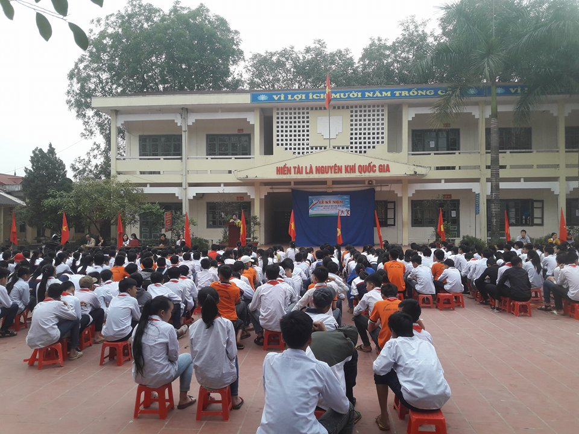
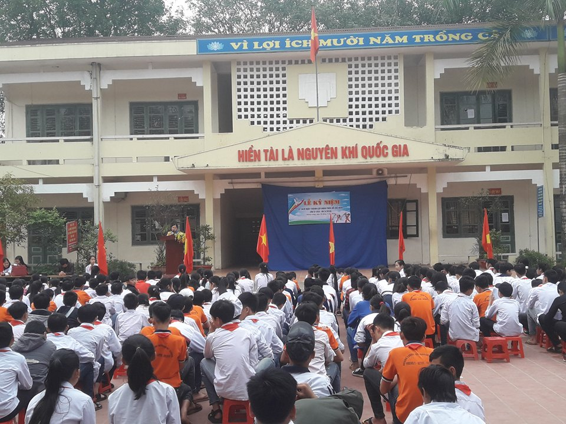
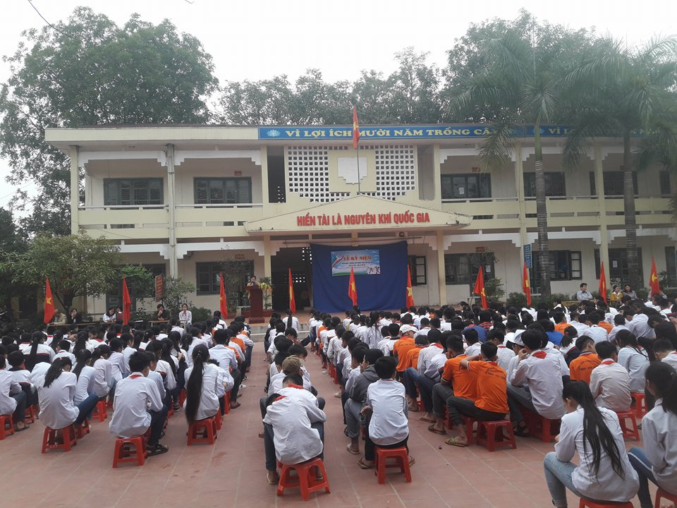
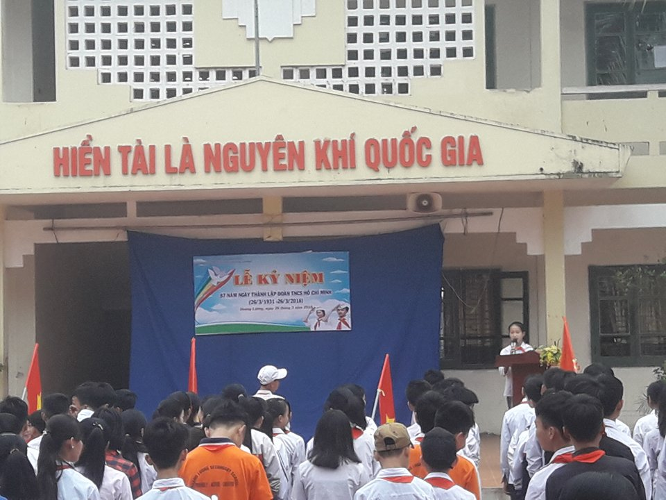
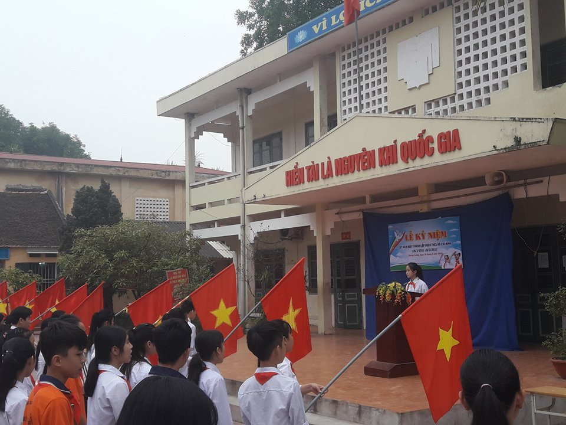
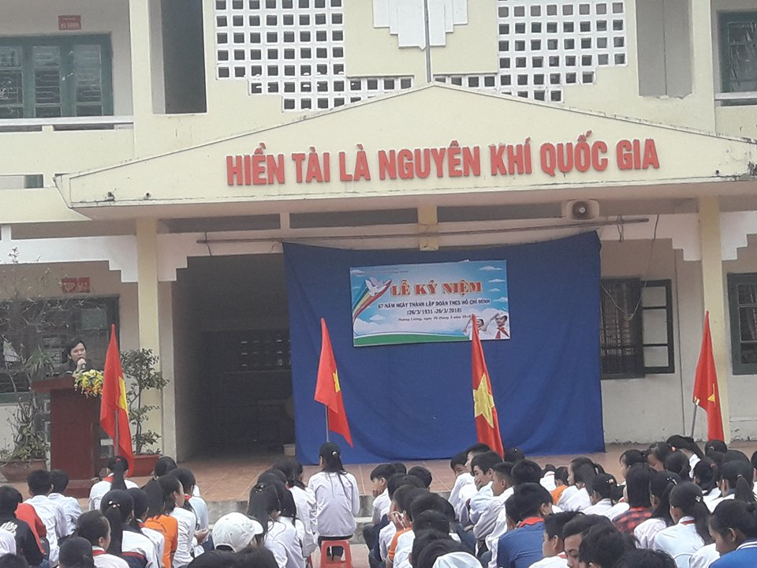
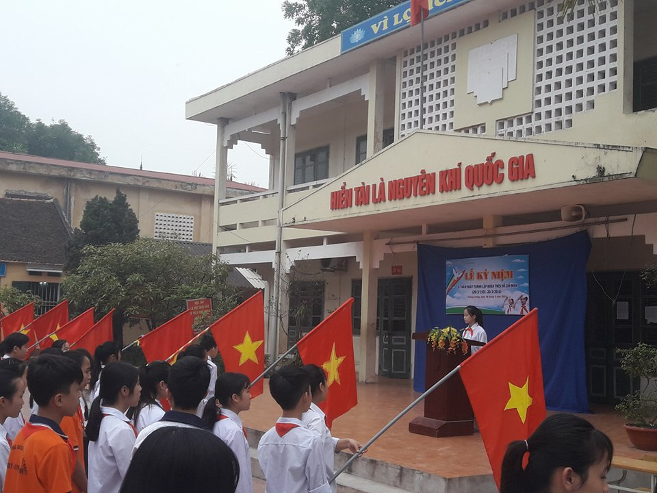
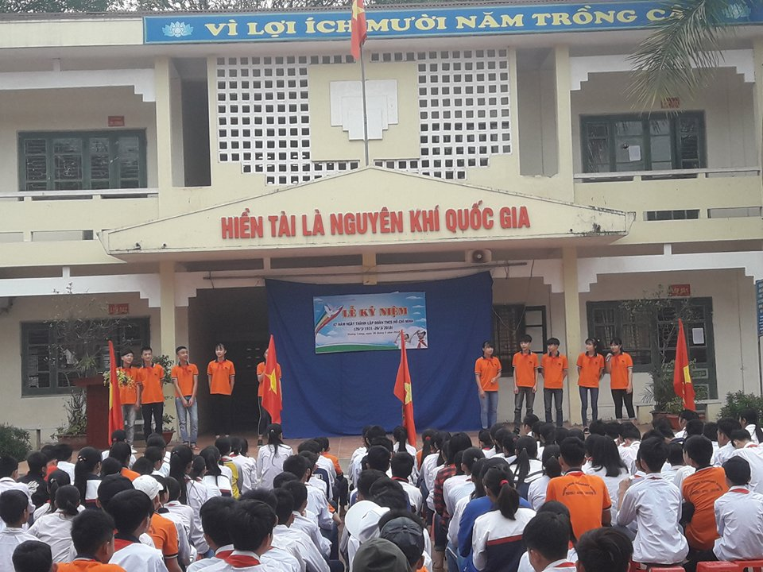

Lễ mít tinh kỷ niệm 87 năm ngày thành lập Đoàn TNCS HCM 26-3 (26/3/1931-26/3/2018)
Lễ mít tinh kỷ niệm 87 năm ngày thành lập Đoàn TNCS HCM 26-3 (26/3/1931-26/3/2018)
Kính thưa các thầy giáo, cô giáo !Thưa các đồng chí đoàn viên thanh niên, cùng các em học sinh thân mến !
Hôm nay, ngày 26/3/2018, hoà cùng không khí tưng bừng của thanh niên cả nước hướng tới kỷ niệm 87 năm ngày thành lập Đoàn TNCS Hồ Chí Minh 26/3/1931 – 26/3/2018. Trường THCS Hoàng Lương tổ chức mít tinh, cùng nhau ôn lại truyền thống vẻ vang của Đoàn.
Sau khi Đảng Cộng sản Việt Nam ra đời ngày 03/02/1930, Đảng ta đã thấy rõ tầm quan trọng của việc xây dựng tổ chức Đoàn. Vì vậy, tại hội nghị Trung ương Đảng lần thứ 2 họp từ ngày 20 – 26/3/1931, Đảng cộng sản Việt Nam quyết định lấy ngày 26/3/1931 là ngày thành lập Đoàn. Đại hội Đoàn toàn quốc lần thứ 3 họp từ ngày 22 – 25/3/1961 đã quyết định lấy ngày 26/3 là ngày kỷ niệm Đoàn hàng năm.
Từ khi thành lập đến nay, để phù hợp với yêu cầu, nhiệm vụ của từng thời kỳ cách mạng, Đoàn ta đã đổi tên gọi nhiều lần:
- Từ 1931 – 1936: Đoàn TNCS Đông Dương
- Từ 1937 – 1939: Đoàn Thanh niên dân chủ Đông Dương.
- Từ 1939 – 1941: Đoàn Thanh niên phản đế Đông Dương.
- Từ 1941 – 1956: Đoàn thanh niên cứu quốc.
- Từ 1956 – 1970: Đoàn thanh niên lao động Việt Nam.
- Từ 1970 – 1976: Đoàn thanh niên lao động Hồ Chí Minh.
- Từ 1976 đến nay: Đoàn TNCS Hồ Chí Minh.
Trong cuộc đấu tranh cách mạng giải phóng dân tộc và xây dựng Tổ quốc Việt Nam, Đoàn thanh niên đã có những cống hiến xuất sắc và trưởng thành vượt bậc, xây dựng nên một truyền thống lịch sử rất vẻ van. Đã có nhiều thế hệ thanh niên Việt Nam đã kế tiếp nhau chiến đấu anh dũng vì độc lập tự do của Tổ quốc, vì chủ nghĩa xã hội.
Đó là lớp thanh niên “Quyết tử cho Tổ quốc quyết sinh” mà tiêu biểu là chị Võ Thị Sáu, anh Lê Văn Tám,
Đó là các thế hệ thanh niên anh hùng trong cuộc kháng chiến chống Mỹ cứu nước như Nguyễn Văn Trỗi, Thái Văn A… và biết bao anh hùng trẻ tuổi khác.
Với các phong trào “Thanh niên xung phong tình nguyện”, “Thanh niên ba sẵn sàng”, “Năm xung kích”, “Thanh niên quyết thắng”, biết bao thanh niên anh hùng góp sức để giành thắng lợi trong cuộc tấn công thần tốc mùa xuân năm 1975 để đất nước Việt Nam được thống nhất như ngày hôm nay.
Trong công cuộc xây dựng chủ nghĩa xã hội, nhất là trong công cuộc công nghiệp hoá, hiện đại hoá đất nước, hàng trục triệu đoàn viên đã và đang dấy lên phong trào “Ba xung kích làm chủ tập thể”, “Thanh niên lao động sáng tạo”, “Thắp sáng tương lai”…
Và trong cuộc sống gần gũi xung quanh chúng ta, cũng có những gương mặt đoàn viên thanh niên tiêu biểu như:
Tất cả những con người đó đều tô thêm một nét son ở trang sử vàng trong truyền thống của Đoàn ta. Xác định được vai trò của lực lượng Đoàn viên, thanh niên trong những năm gần đây, được sự quan tâm của Chi bộ, Ban giám hiệu nhà trường. Chi đoàn Trường THCS Hoàng Lương được củng cố,hoạt động ngày một sôi nổi. Hàng năm chi Đoàn nhà trường kết hợp với Đoàn xã Hoàng lương tổ chức cho các bạn đội viên ưu tú khối 9 được bồi dưỡng kiến thức về Đoàn, tạo điều kiện để các bạn được đứng trong hàng ngũ của Đoàn khi đang ngồi trên ghế nhà trường. Trong dịp kỷ niệm 87 năm ngày thành lập đoàn, chi đoàn trường THCS đã kết nạp thêm 20 em đội viên ưu tú vào tổ chức đoàn. Hy vọng trong năm học này, những đoàn viên mới này sẽ nỗ lực học tập để đạt kết quả cao nhất trong học tập và rèn luyện cũng như tham gia tích cực các hoạt động tập thể trong nhà trường, góp phần không nhỏ trong việc thực hiện thắng lợi kế hoạch mỗi năm học đã đề ra.
Nhận thức được vị trí vai trò của tuổi trẻ, hàng năm lực lượng đoàn viên trong cán bộ, giáo viên, công nhân viên đã có nhiều cố gắng để hoàn thành nhiệm vụ được giao.
Kính thưa các thầy giáo, cô giáo !Thưa các đồng chí Đoàn viên thanh niên, cùng các em học sinh thân mến !
Nhân dịp kỷ niệm 87 năm ngày thành lập Đoàn TNCS Hồ Chí Minh, thay mặt Ban chấp hành chi Đoàn trường THCS Hoàng Lương tôi xin biểu dương thành tích của các tập thể, cá nhân đã đạt được trong các phong trào thi đua do nhà trường đề ra. Tôi mong rằng các đồng chí Đoàn viên hãy phát huy hơn nữa khả năng của mình trong công tác chuyên môn và rèn luyện để có kết quả cao trong công việc, các giáo viên trong chi đoàn trường THCS Hoàng Lương phấn đấu là đội ngũ đi đầu trong việc tiếp cận thông tin để phục vụ cho công tác chuyên môn, sử dụng các phương tiện dạy học hiện đại phục vụ cho công tác giảng dạy, áp dụng các phương pháp dạy học tích cực, phấn đấu hoàn thành tốt nhiệm vụ được chi bộ, Ban giám hiệu nhà trường giao phó, mỗi đồng chí đoàn viên thanh niên hãy có nhiều việc làm tốt để làm đẹp thêm truyền thống của các thế hệ đoàn viên thanh niên trường THCS Hoàng Lương.
Đặc biệt là các thế hệ thanh thiếu niên trong trường thực hiện tốt nội quy của nhà trường để thực hiện tốt nhiệm vụ năm học.
Xin kính chúc sức khoẻ các thầy giáo, cô giáo, chúc các đồng chí đoàn viên thanh niên và các em học sinh hoàn thành tốt nhiệm vụ của mình trong năm học 2017 – 2018.






.jpg)

